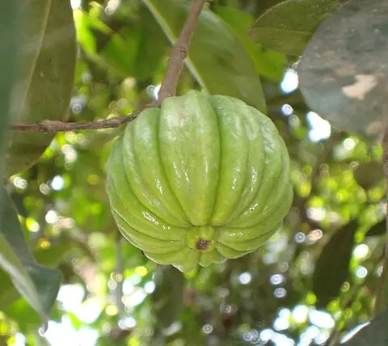

Malabar tamarind
Malabar tamarind is a wild fruit you can forage from June to August in South India and West coast and Deccan. Ghats forest tree with ribbed yellow fruit. The souring for Kerala fish curry.

When is Malabar tamarind in season in India?
Malabar tamarind is usually in season June to August. Timing shifts with weather, latitude and altitude.
Where does Malabar tamarind grow in India?
Malabar tamarind grows in Andaman and Nicobar Islands, Andhra Pradesh, Dadra and Nagar Haveli and Daman and Diu, Goa, Gujarat, Karnataka, Kerala, Lakshadweep, Maharashtra, Puducherry, Tamil Nadu, Telangana. Regions: South India, West coast and Deccan.
How do you recognise Malabar tamarind?
Ghats forest tree with ribbed yellow fruit. The souring for Kerala fish curry.
How do you harvest Malabar tamarind?
Pick fruit that comes away easily, or gather freshly fallen fruit. Don't break branches, and leave plenty for birds and animals.
How do you eat Malabar tamarind?
Fish curries and saaru.
How do you store Malabar tamarind?
Smoke- or sun-dry the rind segments until black. Keeps a year or more.
What can you cook with Malabar tamarind?
- Kudampuli fish curry: Kerala red fish curry soured with smoked Malabar tamarind.